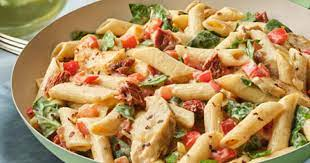

Pasta

Description
Pasta is a set of foods prepared with a dough whose basic ingredient is semolina, mixed with water, and to which salt, egg or other ingredients can be added, forming a product that is generally cooked in boiling water.
In the East, buckwheat or rice flour is common, while most Western recipes follow the Italian tradition, therefore they use durum wheat flour.
Ingredients
- Eggs
- Salt
- Flour
- Olive Oil
Steps
- With a fork, add the flour little by little until you have a hard dough. Knead until the mixture obtains a smooth and shiny texture, store in a plastic bag for 1 hour.
- With the help of a pasta machine or a rolling pin, roll out to the desired thickness depending on the type of pasta you like.
- Once cut to prevent sticking. To cook the pasta, boil it in salted water for only 4 minutes.